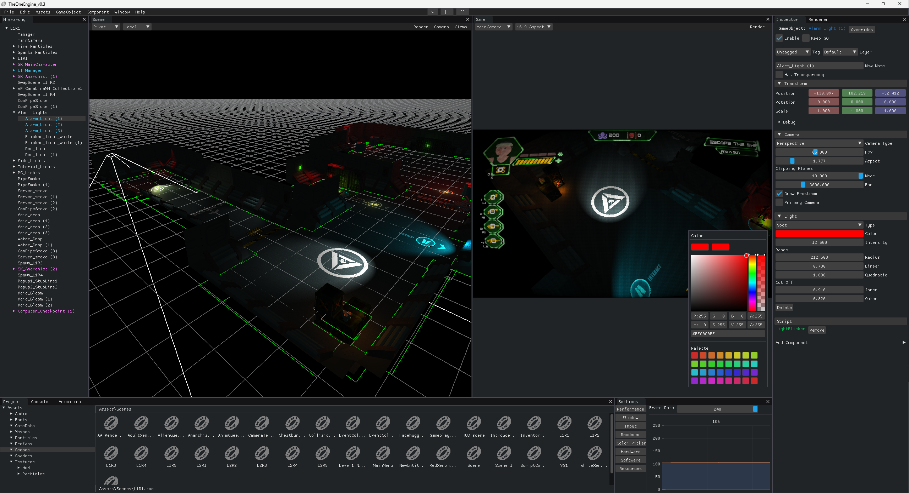

Background
About Me
Video Games, films and novels have undoubtedly been the major motivations for hobbies
such as drawing and photography since I was young. Pursuing an engineering degree in
Telecommunications soon pushed away such hobbies, and replaced them with math, electronics and coding.
Such is life that I got in touch with the gaming world again, and a newborn passion was lit in me when I
discovered this field, where I can express myself while solving difficult problems in creative ways.
I’m excited to begin my journey into game development, and tackling this project has just reinforced my
trust that I’m on the right path.
Project Overview
As a member of the code team, I have actively participated in the development of the engine, building
from the ground up modules that have helped shape our game.
During the development of this project I’ve learned to work together
with my team to tackle difficult tasks efficiently, which has led me to learn new things outside my area of expertise and overall, grow as a programmer.
Main Tasks
Animation Module
Alongside Alex Delgado, I implemented an animation module from scratch, using the Ozz-Animation library.
This involved building the necessary .lib files, creating a new project and Implementing:

Render / Post Process Pipeline
At some point, the 2D and 3D rendering modules had to be managed concurrently with a variety of Shader effects.
To achieve this, I developed a Render / Post-Processing pipeline that could manage multiple rendering targets,
as well as offering the necessary functionality to create and manage OpenGL’s Framebuffers and Attachments.

Implementation
Research, Viability and Testing
Engine Usability
As much work as we put in the initial development of the engine, due to time constraints and lack of knowledge in certain areas, some functionalities of TheOne need to be reworked or implemented from scratch.

Editor Design / Utilities
I’ve poured my passion for game development in TheOneEngine since its foundation 6 months ago, and I must admit I've grown attached to it. I have taken extra care to streamline the Engine’s built-in Editor, not only to provide functionality for the development of the game, but to offer a pleasant and user oriented experience.
Code Snippets
CRT Shader
Shader stylizing game to look as though it is on a CRT display.
Renderer Pipeline
Pipeline for game rendering